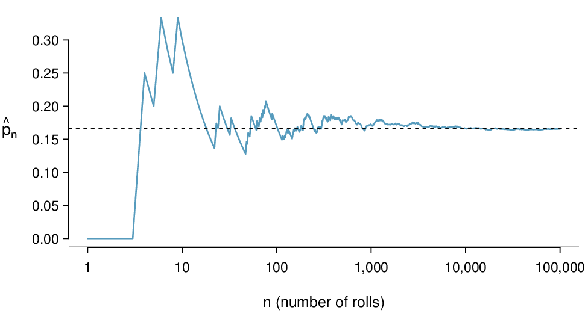
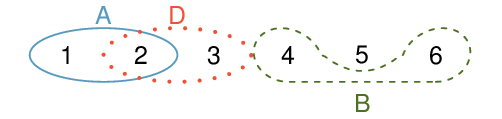
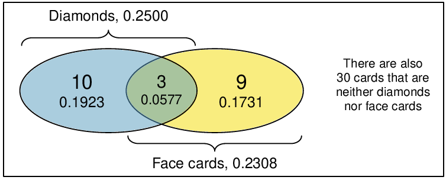
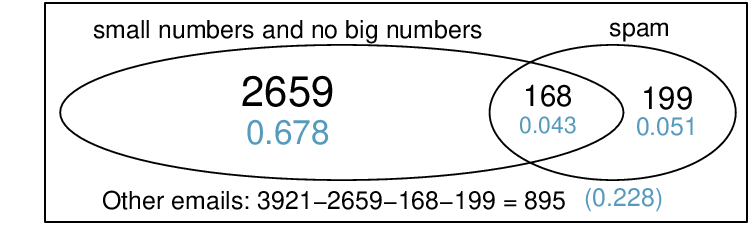
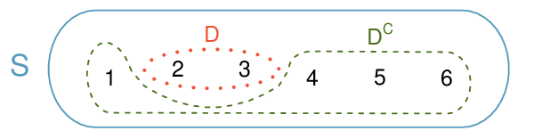
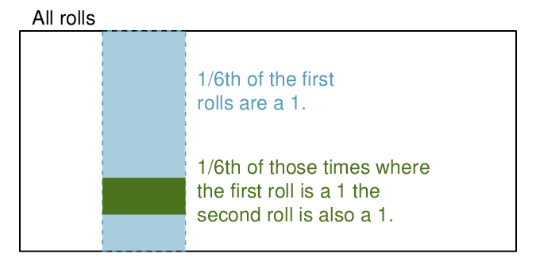
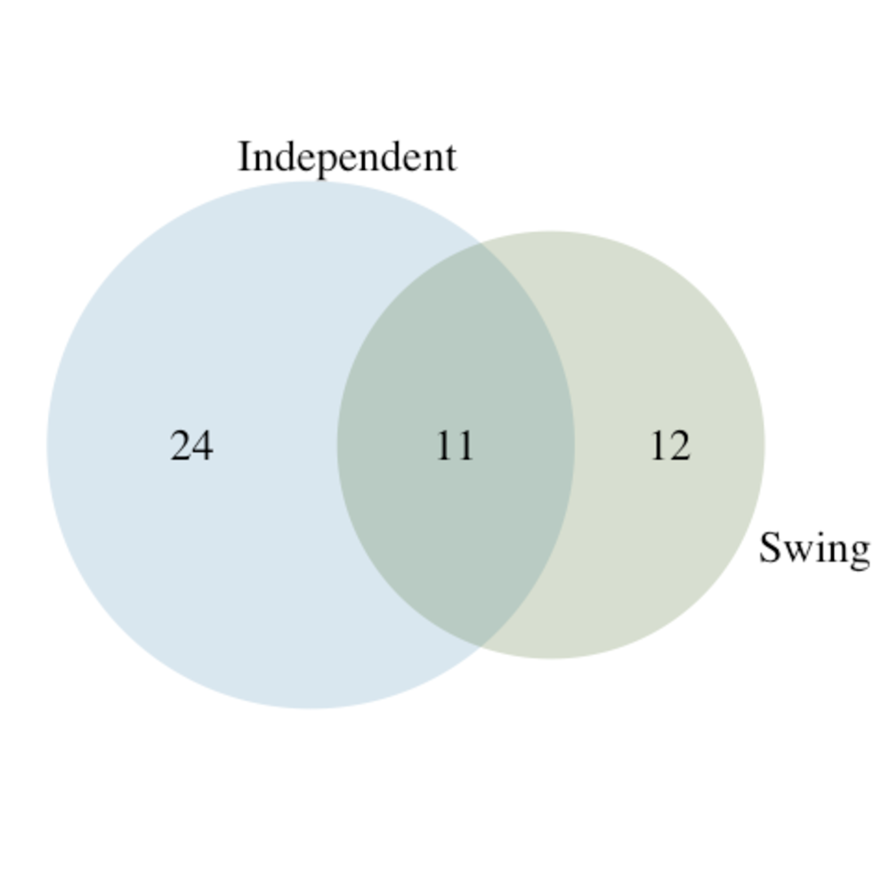

What is the probability of rolling an even number on a die? Of getting 5 heads in row when tossing a coin? Of drawing a Heart or an Ace from a deck of cards? The study of probability is fun and interesting in its own right, but it also forms the foundation for statistical models and inferential procedures, many of which we will investigate in subsequent chapters.
Objectives:Learning objectives
Describe the long-run relative frequency interpretation of probability and understand its relationship to the “Law of Large Numbers”.
Use Venn diagrams to represent events and their probabilities and to visualize the complement, union, and intersection of events.
Use the General Addition Rule to find the probability that at least one of several events occurs.
Understand when events are disjoint (mutually exclusive) and how that simplifies the General Addition Rule.
Apply the Multiplication Rule for finding the joint probability of independent events.
Subsection3.1.1Introductory examples
Example3.1.1.
A “die”, the singular of dice, is a cube with six faces numbered 1, 2, 3, 4, 5, and 6. What is the chance of getting 1 when rolling a die?
Solution.
If the die is fair, then the chance of a 1 is as good as the chance of any other number. Since there are six outcomes, the chance must be 1-in-6 or, equivalently, \(1/6\text{.}\)
Example3.1.2.
What is the chance of getting a 1 or 2 in the next roll?
Solution.
1 and 2 constitute two of the six equally likely possible outcomes, so the chance of getting one of these two outcomes must be \(2/6 = 1/3\text{.}\)
Example3.1.3.
What is the chance of getting either 1, 2, 3, 4, 5, or 6 on the next roll?
Solution.
100%. The outcome must be one of these numbers.
Example3.1.4.
What is the chance of not rolling a 2?
Solution.
Since the chance of rolling a 2 is \(1/6\) or \(16.\bar{6}\%\text{,}\) the chance of not rolling a 2 must be \(100\% - 16.\bar{6}\%=83.\bar{3}\%\) or \(5/6\text{.}\)
Alternatively, we could have noticed that not rolling a 2 is the same as getting a 1, 3, 4, 5, or 6, which makes up five of the six equally likely outcomes and has probability \(5/6\text{.}\)
Example3.1.5.
Consider rolling two dice. If \(1/6^{th}\) of the time the first die is a 1 and \(1/6^{th}\) of those times the second die is a 1, what is the chance of getting two 1 s?
Solution.
If \(16.\bar{6}\)% of the time the first die is a 1 and \(1/6^{th}\) of those times the second die is also a 1, then the chance that both dice are 1 is \((1/6)\times (1/6)\) or \(1/36\text{.}\)
Subsection3.1.2Probability
We use probability to build tools to describe and understand apparent randomness. We often frame probability in terms of a random process giving rise to an outcome.
Roll a die
\(\rightarrow\)
1, 2, 3, 4, 5, or 6
Flip a coin
\(\rightarrow\)
H or T
Rolling a die or flipping a coin is a seemingly random process and each gives rise to an outcome.
Probability.
The probability of an outcome is the proportion of times the outcome would occur if we observed the random process an infinite number of times.
Probability is defined as a proportion, and it always takes values between 0 and 1 (inclusively). It may also be displayed as a percentage between 0% and 100%.
Probability can be illustrated by rolling a die many times. Consider the event “roll a 1”. The relative frequency of an event is the proportion of times the event occurs out of the number of trials. Let \(\hat{p}_n\) be the proportion of outcomes that are 1 after the first \(n\) rolls. As the number of rolls increases, \(\hat{p}_n\) (the relative frequency of rolls) will converge to the probability of rolling a 1, \(p = 1/6\text{.}\)Figure 3.1.6 shows this convergence for 100,000 die rolls. The tendency of \(\hat{p}_n\) to stabilize around \(p\text{,}\) that is, the tendency of the relative frequency to stabilize around the true probability, is described by the Law of Large Numbers.

Figure3.1.6.The fraction of die rolls that are 1 at each stage in a simulation. The relative frequency tends to get closer to the probability \(1/6 \approx 0.167\) as the number of rolls increases.
Law of Large Numbers.
As more observations are collected, the observed proportion \(\hat{p}_n\) of occurrences with a particular outcome after \(n\) trials converges to the true probability \(p\) of that outcome.
Occasionally the proportion will veer off from the probability and appear to defy the Law of Large Numbers, as \(\hat{p}_n\) does many times in Figure 3.1.6. However, these deviations become smaller as the number of rolls increases.
Above we write \(p\) as the probability of rolling a 1. We can also write this probability as
\begin{equation*}
P(\text{rolling a } 1)
\end{equation*}
As we become more comfortable with this notation, we will abbreviate it further. For instance, if it is clear that the process is “rolling a die”, we could abbreviate \(P(\text{rolling a } 1)\) as \(P(1)\text{.}\)
Guided Practice3.1.7.
Random processes include rolling a die and flipping a coin. (a) Think of another random process. (b) Describe all the possible outcomes of that process. For instance, rolling a die is a random process with potential outcomes 1, 2, ...,6. 1
Here are four examples. (i) Whether someone gets sick in the next month or not is an apparently random process with outcomes sick and not. (ii) We can generate a random process by randomly picking a person and measuring that person’s height. The outcome of this process will be a positive number. (iii) Whether the stock market goes up or down next week is a seemingly random process with possible outcomes up, down, and no change. Alternatively, we could have used the percent change in the stock market as a numerical outcome. (iv) Whether your roommate cleans her dishes tonight probably seems like a random process with possible outcomes cleans dishes and leaves dishes.
What we think of as random processes are not necessarily random, but they may just be too difficult to understand exactly. The fourth example in the footnote solution to Guided Practice 3.1.7 suggests a roommate’s behavior is a random process. However, even if a roommate’s behavior is not truly random, modeling her behavior as a random process can still be useful.
Modeling a process as random.
It can be helpful to model a process as random even if it is not truly random.
Subsection3.1.3Disjoint or mutually exclusive outcomes
Two outcomes are called disjoint or mutually exclusive if they cannot both happen in the same trial. For instance, if we roll a die, the outcomes 1 and 2 are disjoint since they cannot both occur on a single roll. On the other hand, the outcomes 1 and “rolling an odd number” are not disjoint since both occur if the outcome of the roll is a 1. The terms disjoint and mutually exclusive are equivalent and interchangeable.
Calculating the probability of disjoint outcomes is easy. When rolling a die, the outcomes 1 and 2 are disjoint, and we compute the probability that one of these outcomes will occur by adding their separate probabilities:
We are interested in the probability of rolling a 1, 4, or 5. (a) Explain why the outcomes 1, 4, and 5 are disjoint. (b) Apply the Addition Rule for disjoint outcomes to determine \(P(\)1 or 4 or 5\()\text{.}\) 2
(a) The random process is a die roll, and at most one of these outcomes can come up. This means they are disjoint outcomes. (b) \(P(1 \text{ or } 4 \text{ or } 5)=P(1)+P(4)+P(5)= \frac{1}{6}+\frac{1}{6}+\frac{1}{6}= \frac{3}{6}= \frac{1}{2}\)
Guided Practice3.1.9.
In the email data set in Chapter 2, the number variable described whether no number (labeled none), only one or more small numbers (small), or whether at least one big number appeared in an email (big). Of the 3,921 emails, 549 had no numbers, 2,827 had only one or more small numbers, and 545 had at least one big number. (a) Are the outcomes none, small, and big disjoint? (b) Determine the proportion of emails with value small and big separately. (c) Use the Addition Rule for disjoint outcomes to compute the probability a randomly selected email from the data set has a number in it, small or big. 3
(a) Yes. Each email is categorized in only one level of number. (b) Small: \(\frac{2827}{3921}=0.721\text{.}\) Big: \(\frac{545}{3921}=0.139\text{.}\) (c) \(P(\text{small }+ \text{big})=P(\text{small})+P(\text{big})=0.721+0.139=0.860\)
Statisticians rarely work with individual outcomes and instead consider sets or collections of outcomes. Let \(A\) represent the event where a die roll results in 1 or 2 and \(B\) represent the event that the die roll is a 4 or a 6. We write \(A\) as the set of outcomes \(\{\)1, 2\(\}\) and \(B=\{\)4, 6\(\}\text{.}\) These sets are commonly called events. Because \(A\) and \(B\) have no elements in common, they are disjoint events. \(A\) and \(B\) are represented in Figure 3.1.10.

Figure3.1.10.Three events, \(A\text{,}\)\(B\text{,}\) and \(D\text{,}\) consist of outcomes from rolling a die. \(A\) and \(B\) are disjoint since they do not have any outcomes in common.
The Addition Rule applies to both disjoint outcomes and disjoint events. The probability that one of the disjoint events \(A\) or \(B\) occurs is the sum of the separate probabilities:
\begin{gather*}
P(A\text{ or } B) = P(A) + P(B) = 1/3 + 1/3 = 2/3
\end{gather*}
Guided Practice3.1.11.
(a) Verify the probability of event \(A\text{,}\)\(P(A)\text{,}\) is \(1/3\) using the Addition Rule. (b) Do the same for event \(B\text{.}\) 4
(a) Using Figure 3.1.10 as a reference, what outcomes are represented by event \(D\text{?}\) (b) Are events \(B\) and \(D\) disjoint? (c) Are events \(A\) and \(D\) disjoint? 5
(a) Outcomes 2 and 3. (b) Yes, events \(B\) and \(D\) are disjoint because they share no outcomes. (c) The events \(A\) and \(D\) share an outcome in common, 2, and so are not disjoint.
Guided Practice3.1.13.
In Guided Practice 3.1.12, you confirmed \(B\) and \(D\) from Figure 3.1.10 are disjoint. Compute the probability that either event \(B\) or event \(D\) occurs. 6
Since \(B\) and \(D\) are disjoint events, use the Addition Rule: \(P(B \text{ or } D) = P(B) + P(D)= \frac{1}{3}+ \frac{1}{3} =\frac{2}{3}\)
Subsection3.1.4Probabilities when events are not disjoint
Let’s consider calculations for two events that are not disjoint in the context of a regular deck of 52 cards, represented in Table 3.1.14. If you are unfamiliar with the cards in a regular deck, please see the footnote. 7
The 52 cards are split into four suits: \(\clubsuit\) (club), \(\diamondsuit\) (diamond), \(\heartsuit\) (heart), \(\spadesuit\) (spade). Each suit has its 13 cards labeled: 2, 3, ..., 10, J (jack), Q (queen), K (king), and A (ace). Thus, each card is a unique combination of a suit and a label, e.g. \(\heartsuit 4\) and \(\clubsuit J\text{.}\) The 12 cards represented by the jacks, queens, and kings are called face cards. The cards that are \(\diamondsuit\) or \(\heartsuit\) are typically colored red while the other two suits are typically colored black.
Table3.1.14.Representations of the 52 unique cards in a deck.
\(\clubsuit 2\)
\(\clubsuit 3\)
\(\clubsuit 4\)
\(\clubsuit 5\)
\(\clubsuit 6\)
\(\clubsuit 7\)
\(\clubsuit 8\)
\(\clubsuit 9\)
\(\clubsuit 10\)
\(\clubsuit\)J
\(\clubsuit\)Q
\(\clubsuit\)K
\(\clubsuit\)A
\(\diamondsuit 2\)
\(\diamondsuit 3\)
\(\diamondsuit 4\)
\(\diamondsuit 5\)
\(\diamondsuit 6\)
\(\diamondsuit 7\)
\(\diamondsuit 8\)
\(\diamondsuit 9\)
\(\diamondsuit 10\)
\(\diamondsuit\)J
\(\diamondsuit\)Q
\(\diamondsuit\)K
\(\diamondsuit\)A
\(\heartsuit 2\)
\(\heartsuit 3\)
\(\heartsuit 4\)
\(\heartsuit 5\)
\(\heartsuit 6\)
\(\heartsuit 7\)
\(\heartsuit 8\)
\(\heartsuit 9\)
\(\heartsuit 10\)
\(\heartsuit\)J
\(\heartsuit\)Q
\(\heartsuit\)K
\(\heartsuit\)A
\(\spadesuit 2\)
\(\spadesuit 3\)
\(\spadesuit 4\)
\(\spadesuit 5\)
\(\spadesuit 6\)
\(\spadesuit 7\)
\(\spadesuit 8\)
\(\spadesuit 9\)
\(\spadesuit 10\)
\(\spadesuit\)J
\(\spadesuit\)Q
\(\spadesuit\)K
\(\spadesuit\)A
Guided Practice3.1.15.
(a) What is the probability that a randomly selected card is a diamond? (b) What is the probability that a randomly selected card is a face card? 8
(a) There are 52 cards and 13 diamonds. If the cards are thoroughly shuffled, each card has an equal chance of being drawn, so the probability that a randomly selected card is a diamond is \(P(\diamondsuit) = \frac{13}{52}=0.250\text{.}\) (b) Likewise, there are 12 face cards, so \(P(\text{face card}) = \frac{12}{52}= \frac{3}{13} =0.231\text{.}\)
Venn diagrams are useful when outcomes can be categorized as “in” or “out” for two or three variables, attributes, or random processes. The Venn diagram in Figure 3.1.16 uses a circle to represent diamonds and another to represent face cards. If a card is both a diamond and a face card, it falls into the intersection of the circles. If it is a diamond but not a face card, it will be in part of the left circle that is not in the right circle (and so on). The total number of cards that are diamonds is given by the total number of cards in the diamonds circle: \(10+3=13\text{.}\) The probabilities are also shown (e.g. \(10/52 = 0.1923\)).

Figure3.1.16.A Venn diagram for diamonds and face cards.
Guided Practice3.1.17.
Using the Venn diagram, verify \(P(\)face card\() = 12/52=3/13\text{.}\) 9
The Venn diagram shows face cards split up into “face card but not \(\diamondsuit\)” and “face card and \(\diamondsuit\)”. Since these correspond to disjoint events, \(P(\text{face card})\) is found by adding the two corresponding probabilities: \(\frac{3}{52}+ \frac{9}{52}= \frac{12}{52} = \frac{3}{13}\)
Let \(A\) represent the event that a randomly selected card is a diamond and \(B\) represent the event that it is a face card. How do we compute \(P(A\) or \(B)\text{?}\) Events \(A\) and \(B\) are not disjoint — the cards \(J\diamondsuit\text{,}\)\(Q\diamondsuit\text{,}\) and \(K\diamondsuit\) fall into both categories — so we cannot use the Addition Rule for disjoint events. Instead we use the Venn diagram. We start by adding the probabilities of the two events:
When we write, “or” in statistics, we mean “and/or” unless we explicitly state otherwise. Thus, \(A\) or \(B\) occurs means \(A\text{,}\)\(B\text{,}\) or both \(A\) and \(B\) occur. This is equivalent to at least one of \(A\) or \(B\) occurring.
Guided Practice3.1.18.
(a) If \(A\) and \(B\) are disjoint, describe why this implies \(P(A \text{ and } B) = 0\text{.}\) (b) Using part (a), verify that the General Addition Rule simplifies to the simpler Addition Rule for disjoint events if \(A\) and \(B\) are disjoint. 10
(a) If A and B are disjoint, A and B can never occur simultaneously. (b) If A and B are disjoint, then the last term of (3.1.2) is 0 (see part (a)) and we are left with the Addition Rule for disjoint events.
Example3.1.19.
In the email data set with 3,921 emails, 367 were spam, 2,827 contained some small numbers but no big numbers, and 168 had both characteristics. Create a Venn diagram for this setup.
Solution.
Both the counts and corresponding probabilities (e.g. \(2659/3921 = 0.678\)) are shown. Notice that the number of emails represented in the left circle corresponds to \(2659 + 168 = 2827\text{,}\) and the number represented in the right circle is \(168 + 199 = 367\text{.}\)

Guided Practice3.1.20.
(a) Use your Venn diagram from Example 3.1.19 to determine the probability a randomly drawn email from the email data set is spam and had small numbers (but not big numbers). (b)What is the probability that the email had either of these attributes? 11
(a)The solution is represented by the intersection of the two circles: 0.043. (b)This is the sum of the three disjoint probabilities shown in the circles: \(0.678 + 0.043 + 0.051 = 0.772\text{.}\)
Subsection3.1.5Complement of an event
Rolling a die produces a value in the set \(\{\)1, 2, 3, 4, 5, 6\(\}\text{.}\) This set of all possible outcomes is called the sample space (\(S\)) for rolling a die. We often use the sample space to examine the scenario where an event does not occur.
Let \(D=\{\)2, 3\(\}\) represent the event that the outcome of a die roll is 2 or 3. Then the complement represents all outcomes in our sample space that are not in \(D\text{,}\) which is denoted by \(D^c = \{\)1, 4, 5, 6\(\}\text{.}\) That is, \(D^c\) is the set of all possible outcomes not already included in \(D\text{.}\)Figure 3.1.21 shows the relationship between \(D\text{,}\)\(D^c\text{,}\) and the sample space \(S\text{.}\)

Figure3.1.21.Event \(D=\{\)2, 3\(\}\) and its complement, \(D^c = \{\)1, 4, 5, 6\(\}\text{.}\)\(S\) represents the sample space, which is the set of all possible events.
Guided Practice3.1.22.
(a) Compute \(P(D^c) = P(\)rolling a 1, 4, 5, or 6\()\text{.}\) (b) What is \(P(D) + P(D^c)\text{?}\) 12
(a) The outcomes are disjoint and each has probability 1=6, so the total probability is \(4/6=2/3\text{.}\) (b) We can also see that \(P(D)=\frac{1}{6} +\frac{1}{6} = 1/3\text{.}\) Since \(D\) and \(D^c\) are disjoint, \(P(D)+P(D^c)=1\text{.}\)
Guided Practice3.1.23.
Events \(A=\{\)1, 2\(\}\) and \(B=\{\)4, 6\(\}\) are shown in Figure 3.1.10. (a) Write out what \(A^c\) and \(B^c\) represent. (b) Compute \(P(A^c)\) and \(P(B^c)\text{.}\) (c) Compute \(P(A)+P(A^c)\) and \(P(B)+P(B^c)\text{.}\) 13
Brief solutions: (a) \(A^c = {3,4,5,6}\) and \(B^c={1,2,3,5}\text{.}\) (b) Noting that each outcome is disjoint, add the individual outcome probabilities to get \(P(A^c)=2/3\) and \(P(B^c)=2/3\text{.}\) (c) \(A\) and \(A^c\) are disjoint, and the same is true of \(B\) and \(B^c\text{.}\) Therefore, \(P(A)+P(A^c)=1\) and \(P(B)+P(B^c)=1\)
An event \(A\) together with its complement \(A^c\) comprise the entire sample space. Because of this we can say that \(P(A) + P(A^c) = 1\text{.}\)
Complement.
The complement of event \(A\) is denoted \(A^c\text{,}\) and \(A^c\) represents all outcomes not in \(A\text{.}\)\(A\) and \(A^c\) are mathematically related:
In simple examples, computing \(A\) or \(A^c\) is feasible in a few steps. However, using the complement can save a lot of time as problems grow in complexity.
Guided Practice3.1.24.
A die is rolled 10 times. (a) What is the complement of getting at least one 6 in 10 rolls of the die? (b) What is the complement of getting at most three 6’s in 10 rolls of the die? 14
(a) The complement of getting at least one 6 in ten rolls of a die is getting zero 6’s in the 10 rolls. (b) The complement of getting at most three 6’s in 10 rolls is getting four, five, ..., nine, or ten 6’s in 10 rolls.
Subsection3.1.6Independence
Just as variables and observations can be independent, random processes can be independent, too. Two processes are independent if knowing the outcome of one provides no useful information about the outcome of the other. For instance, flipping a coin and rolling a die are two independent processes — knowing the coin was heads does not help determine the outcome of a die roll. On the other hand, stock prices usually move up or down together, so they are not independent.
Example 3.1.5 provides a basic example of two independent processes: rolling two dice. We want to determine the probability that both will be 1. Suppose one of the dice is red and the other white. If the outcome of the red die is a 1, it provides no information about the outcome of the white die. We first encountered this same question in Example 3.1.5, where we calculated the probability using the following reasoning: \(1/6^{th}\) of the time the red die is a 1, and \(1/6^{th}\) of those times the white die will also be 1. This is illustrated in Figure 3.1.25. Because the rolls are independent, the probabilities of the corresponding outcomes can be multiplied to get the final answer: \((1/6)\times(1/6)=1/36\text{.}\) This can be generalized to many independent processes.

Figure3.1.25.\(1/6^{th}\) of the time, the first roll is a 1. Then \(1/6^{th}\) of those times, the second roll will also be a 1.
Example3.1.26.
What if there was also a blue die independent of the other two? What is the probability of rolling the three dice and getting all 1 s?
Solution.
The same logic applies from Example 3.1.5. If \(1/36^{th}\) of the time the white and red dice are both 1, then \(1/6^{th}\) of those times the blue die will also be 1, so multiply:
\begin{gather*}
P(\text{white }=1 \text{ and red }=1 \text{ and blue } =1)\\
= P(\text{white }=1)\times P(\text{red }=1)\times P(\text{blue }=1)\\
= (1/6)\times (1/6)\times (1/6) = 1/216
\end{gather*}
Example 3.1.5 and Example 3.1.26 illustrate what is called the Multiplication Rule for independent processes.
Multiplication Rule for independent processes.
If \(A\) and \(B\) represent events from two different and independent processes, then the probability that both \(A\) and \(B\) occur can be calculated as the product of their separate probabilities:
\begin{equation}
P(A \text{ and } B) = P(A) \times P(B)\tag{3.1.5}
\end{equation}
Similarly, if there are \(k\) events \(A_1\text{,}\) ..., \(A_k\) from \(k\) independent processes, then the probability they all occur is
About 9% of people are left-handed. Suppose 2 people are selected at random from the U.S. population. Because the sample size of 2 is very small relative to the population, it is reasonable to assume these two people are independent. (a) What is the probability that both are left-handed? (b) What is the probability that both are right-handed? 15
(a) The probability the first person is left-handed is \(0.09\text{,}\) which is the same for the second person. We apply the Multiplication Rule for independent processes to determine the probability that both will be left-handed: \(0.09\times 0.09 = 0.0081\text{.}\) (b) It is reasonable to assume the proportion of people who are ambidextrous (both right- and left-handed) is nearly 0, which results in \(P(\text{right-handed})=1-0.09=0.91\text{.}\) Using the same reasoning as in part (a), the probability that both will be right-handed is \(0.91\times 0.91 = 0.8281\text{.}\)
Guided Practice3.1.28.
Suppose 5 people are selected at random.
What is the probability that all are right-handed?
What is the probability that all are left-handed?
What is the probability that not all of the people are right-handed? 16
(a) The abbreviations RH and LH are used for right-handed and left-handed, respectively. Since each are independent, we apply the Multiplication Rule for independent processes: \(P(\text{all five are RH})=P(\text{first=RH, second=RH, ..., fifth=RH})\)\(=P(\text{first=RH}) \times P(\text{second=RH}) \times \cdots \times P(\text{fifth=RH})\)\(0.91 \times 0.91 \times 0.91 \times 0.91 \times 0.91=0.624\) (b) Using the same reasoning as in (a), \(0.09 \times 0.09 \times 0.09 \times 0.09 \times 0.09 = 0.0000059\) (c) Use the complement, \(P(\text{all five are RH})\text{,}\) to answer this question: \(P(\text{not all RH})=1-P(\text{all RH})=1-0.624=0.376\)
Suppose the variables handedness and gender are independent, i.e. knowing someone’s gender provides no useful information about their handedness and vice-versa. Then we can compute whether a randomly selected person is right-handed and female 17
The actual proportion of the U.S. population that is female is about 50%, and so we use 0.5 for the probability of sampling a woman. However, this probability does differ in other countries.
What is the probability that the first person is male and right-handed?
What is the probability that the first two people are male and right-handed?.
What is the probability that the third person is female and left-handed?
What is the probability that the first two people are male and right-handed and the third person is female and left-handed? 18
Brief answers are provided. (a) This can be written in probability notation as \(P(\text{a randomly selected person is male and right-handed}) = 0.455\text{.}\) (b) 0.207. (c) 0.045. (d) 0.0093.
Sometimes we wonder if one outcome provides useful information about another outcome. The question we are asking is, are the occurrences of the two events independent? We say that two events \(A\) and \(B\) are independent if they satisfy (3.1.5).
Example3.1.30.
If we shuffle up a deck of cards and draw one, is the event that the card is a heart independent of the event that the card is an ace?
Solution.
The probability the card is a heart is \(1/4\) and the probability that it is an ace is \(1/13\text{.}\) The probability the card is the ace of hearts is \(1/52\text{.}\) We check whether (3.1.5) is satisfied:
Because the equation holds, the event that the card is a heart and the event that the card is an ace are independent events.
Subsection3.1.7Section summary
When an outcome depends upon a chance process, we can define the probability of the outcome as the proportion of times it would occur if we repeated the process an infinite number of times. Also, even when an outcome is not truly random, modeling it with probability can be useful.
The Law of Large Numbers states that the relative frequency, or proportion of times an outcome occurs after \(n\) repetitions, stabilizes around the true probability as \(n\) gets large.
The probability of an event is always between 0 and 1, inclusive.
The probability of an event and the probability of its complement add up to 1. Sometime we use \(P(A) = 1- P(\text{ not } A)\) when \(P(\text{ not } A)\) is easier to calculate than \(P(A)\text{.}\)
\(A\) and \(B\) are disjoint, i.e. mutually exclusive, if they cannot happen together. In this case, the events do not overlap and \(P(A \text { and } B) = 0\text{.}\)
In the special case where \(A\) and \(B\) are disjoint events: \(P(A \text{ or } B) = P(A) + P(B)\text{.}\)
When \(A\) and \(B\) are not disjoint, adding \(P(A)\) and \(P(B)\) will overestimate \(P(A \text{ or } B)\) because the overlap of \(A\) and \(B\) will be added twice. Therefore, when \(A\) and \(B\) are not disjoint, use the General Addition Rule: \(P(A \text{ or B } ) = P(A) + P(B) - P(A \text{ and } B)\text{.}\) 19
Often written: \(P(A \cup B) = P(A) + P(B) - P(A \cap B)\text{.}\)
To find the probability that at least one of several events occurs, use a special case of the rule of complements : \(P(\text{ at least one } ) = 1- P(\text{ none } )\text{.}\)
When only considering two events, the probability that one or the other happens is equal to the probability that at least one of the two events happens. When dealing with more than two events, the General Addition Rule becomes very complicated. Instead, to find the probability that \(A\) or \(B\) or \(C\) occurs, find the probability that none of them occur and subtract that value from 1.
Two events are independent when the occurrence of one does not change the likelihood of the other.
In the special case where \(A\) and \(B\) are independent: \(P(A \text{ and } B) = P(A)\times P(B)\text{.}\)
Exercises3.1.8Exercises
1.True or false.
Determine if the statements below are true or false, and explain your reasoning.
If a fair coin is tossed many times and the last eight tosses are all heads, then the chance that the next toss will be heads is somewhat less than 50%.
Drawing a face card (jack, queen, or king) and drawing a red card from a full deck of playing cards are mutually exclusive events.
Drawing a face card and drawing an ace from a full deck of playing cards are mutually exclusive events.
Solution.
False. These are independent trials.
False. There are red face cards.
True. A card cannot be both a face card and an ace.
2.Roulette wheel.
The game of roulette involves spinning a wheel with 38 slots: 18 red, 18 black, and 2 green. A ball is spun onto the wheel and will eventually land in a slot, where each slot has an equal chance of capturing the ball.
You watch a roulette wheel spin 3 consecutive times and the ball lands on a red slot each time. What is the probability that the ball will land on a red slot on the next spin?
You watch a roulette wheel spin 300 consecutive times and the ball lands on a red slot each time. What is the probability that the ball will land on a red slot on the next spin?
Are you equally confident of your answers to parts (a) and (b)? Why or why not?
3.Four games, one winner.
Below are four versions of the same game. Your archnemesis gets to pick the version of the game, and then you get to choose how many times to flip a coin: 10 times or 100 times. Identify how many coin flips you should choose for each version of the game. It costs $1 to play each game. Explain your reasoning.
If the proportion of heads is larger than 0.60, you win $1.
If the proportion of heads is larger than 0.40, you win $1.
If the proportion of heads is between 0.40 and 0.60, you win $1.
If the proportion of heads is smaller than 0.30, you win $1.
Solution.
10 tosses. Fewer tosses mean more variability in the sample fraction of heads, meaning there’s a better chance of getting at least 60% heads.
100 tosses. More flips means the observed proportion of heads would often be closer to the average, 0.50, and therefore also above 0.40.
100 tosses. With more flips, the observed proportion of heads would often be closer to the average, 0.50.
10 tosses. Fewer flips would increase variability in the fraction of tosses that are heads.
4.Backgammon.
Backgammon is a board game for two players in which the playing pieces are moved according to the roll of two dice. Players win by removing all of their pieces from the board, so it is usually good to roll high numbers. You are playing backgammon with a friend and you roll two 6s in your first roll and two 6s in your second roll. Your friend rolls two 3s in his first roll and again in his second row. Your friend claims that you are cheating, because rolling double 6s twice in a row is very unlikely. Using probability, show that your rolls were just as likely as his.
5.Coin flips.
If you flip a fair coin 10 times, what is the probability of
getting all tails?
getting all heads?
getting at least one tails?
Solution.
\(0.5^{10} = 0.00098\text{.}\)
\(0.5^{10} = 0.00098\text{.}\)
\(\displaystyle P(\text{at least one tails})=1 - P(\text{no tails}) = 1- (0.5^{10}) \approx 1-0.001=0.999\)
6.Dice rolls.
If you roll a pair of fair dice, what is the probability of
getting a sum of 1?
getting a sum of 5?
getting a sum of 12?
7.Swing voters.
A Pew Research survey asked 2,373 randomly sampled registered voters their political affiliation (Republican, Democrat, or Independent) and whether or not they identify as swing voters. 35% of respondents identified as Independent, 23% identified as swing voters, and 11% identified as both. 22
Are being Independent and being a swing voter disjoint, i.e. mutually exclusive?
Draw a Venn diagram summarizing the variables and their associated probabilities.
What percent of voters are Independent but not swing voters?
What percent of voters are Independent or swing voters?
What percent of voters are neither Independent nor swing voters?
Is the event that someone is a swing voter independent of the event that someone is a political Independent?
Solution.
No, there are voters who are both independent and swing voters.

Each Independent voter is either a swing voter or not. Since 35% of voters are Independents and 11% are both Independent and swing voters, the other 24% must not be swing voters.
0.47.
0.53.
\(P(\text{Independent}) \times P(\text{swing}) = 0.35 \times 0.23 = 0.08\text{,}\) which does not equal \(P(\text{Independent and swing}) = 0.11\text{,}\) so the events are dependent.
8.Poverty and language.
The American Community Survey is an ongoing survey that provides data every year to give communities the current information they need to plan investments and services. The 2010 American Community Survey estimates that 14.6% of Americans live below the poverty line, 20.7% speak a language other than English foreign language) at home, and 4.2% fall into both categories. 23
Are living below the poverty line and speaking a foreign language at home disjoint?
Draw a Venn diagram summarizing the variables and their associated probabilities.
What percent of Americans live below the poverty line and only speak English at home?
What percent of Americans live below the poverty line or speak a foreign language at home?
What percent of Americans live above the poverty line and only speak English at home?
Is the event that someone lives below the poverty line independent of the event that the person speaks a foreign language at home?
9.Disjoint vs. independent.
In parts (a) and (b), identify whether the events are disjoint, independent, or neither (events cannot be both disjoint and independent).
You and a randomly selected student from your class both earn A’s in this course.
You and your class study partner both earn A’s in this course.
If two events can occur at the same time, must they be dependent?
Solution.
If the class is not graded on a curve, they are independent. If graded on a curve, then neither independent nor disjoint - unless the instructor will only give one A, which is a situation we will ignore in parts (b) and (c).
They are probably not independent: if you study together, your study habits would be related, which suggests your course performances are also related.
No. See the answer to part (a) when the course is not graded on a curve. More generally: if two things are unrelated (independent), then one occurring does not preclude the other from occurring.
10.Guessing on an exam.
In a multiple choice exam, there are 5 questions and 4 choices for each question (a, b, c, d). Nancy has not studied for the exam at all and decides to randomly guess the answers. What is the probability that:
the first question she gets right is the \(5^{th}\) question?
she gets all of the questions right?
she gets at least one question right?
11.Educational attainment.
The family_college data set contains a sample of 792 cases with two variables, teen and parents, and is summarized below. 24
The teen variable is either college or not, where the college label means the teen went to college immediately after high school. The parents variable takes the value degree if at least one parent of the teenager completed a college degree.
Table3.1.32.Contingency table summarizing the family_college data set.
parents
degree
not
total
teen
college
231
214
445
not
49
298
347
Total
280
512
792
For a randomly selected case, what is the probability that a parent completed a college degree?
For a randomly selected case, what is the probability that the teen went to college immediately after high school?
For a randomly selected case, what is the probability that a parent completed a college degree and teen went to college immediately after high school?
Is \(P(\text{a parent completed college degree teen went to college immediately after high school}) = P(\text{parent completed college degree}) \times P(\text{teen went to college immediately after high school})\text{?}\) Explain why this is or is not the case.
Solution.
\(280/792=0.354\text{.}\)
\(445/792=0.562\text{.}\)
\(231/792=0.292\text{.}\)
\(0.354 \times 0.562 = 0.199 \neq 0.292\text{.}\) The events are not independent, so you cannot just multiply the unconditional probabilities.
12.School absences.
Data collected at elementary schools in DeKalb County, GA suggest that each year roughly 25% of students miss exactly one day of school, 15% miss 2 days, and 28% miss 3 or more days due to sickness. 25
What is the probability that a student chosen at random doesn’t miss any days of school due to sickness this year?
What is the probability that a student chosen at random misses no more than one day?
What is the probability that a student chosen at random misses at least one day?
If a parent has two kids at a DeKalb County elementary school, what is the probability that neither kid will miss any school? Note any assumption you must make to answer this question.
If a parent has two kids at a DeKalb County elementary school, what is the probability that both kids will miss some school, i.e. at least one day? Note any assumption you make.
If you made an assumption in part (d) or (e), do you think it was reasonable? If you didn’t make any assumptions, double check your earlier answers.